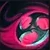

História
Zed
Por baixo do véu de harmonia de Ionia, escondem-se os contos dos que ficaram para trás. No caso de Zed, o conto teve início nos degraus frios do lar da Ordem Kinkou.
Acolhido pelo próprio Grande Mestre Kusho, Zed encontrou seu lugar entre as paredes ancestrais do templo. Ele se dedicou a entender os dogmas espirituais dos Kinkou, rapidamente se sobressaindo sobre os demais colegas, tanto em combate quando nos estudos. Mesmo assim, ele sempre se sentia à sombra de alguém — Shen, o filho de seu mestre. Embora Zed demonstrasse sua paixão a cada golpe executado com maestria, lhe faltava o controle emocional de Shen. Apesar disso, os dois alunos eram como irmãos.
Conforme as tensões aumentavam em Ionia com a invasão noxiana, Zed passou a questionar os métodos pacíficos dos Kinkou. Convencido de que sua terra precisava de medidas mais drásticas, ele desenterrou uma arte proibida — as sombras. Ao ser confrontado pelo Mestre Kusho, Zed foi expulso da ordem. Ferido e revoltado, ele passou anos treinando nas sombras até retornar, agora dominando totalmente essa força sombria. Em sua volta, Zed matou seu antigo mestre e assumiu o templo, formando a Ordem das Sombras. Ele acreditava que o equilíbrio só poderia ser mantido com força e sacrifício, não com compaixão. Desde então, vive em guerra com Shen e os antigos ideais dos Kinkou, guiado pela crença de que proteger Ionia exige fazer o que for necessário — mesmo que isso custe sua própria alma.
Habilidades
Q

Shuriquem Laminado
A habilidade Q – Shuriken Laminado do Zed lança uma shuriken em linha reta que causa dano, podendo ser duplicada por suas sombras para atingir mais inimigos ou causar mais dano.
W
Sombra Viva
A habilidade W – Sombra Viva do Zed faz com que ele projete uma sombra em uma direção, que permanece no local por alguns segundos, imitando suas habilidades Q e E. Zed pode reativar a W para trocar de lugar com a sombra, permitindo mobilidade estratégica para ataques ou fuga.